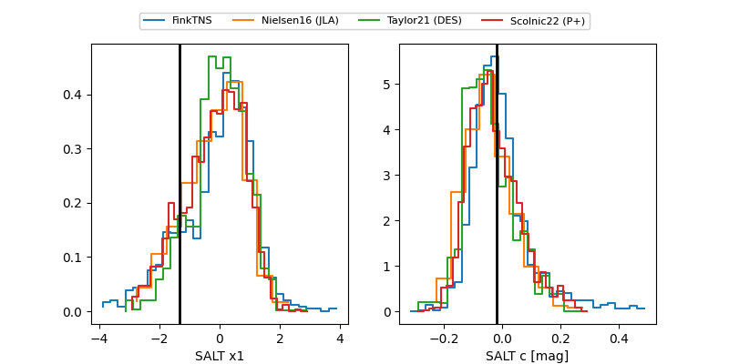

FINK: ZTF25abmqroa
Lasair: ZTF25abmqroa
ALeRCE: ZTF25abmqroa
TNS: 2025wha
YSE: 2025wha
ZTF25abmqroa (ztf,fink)
2025wha (tns,yse)
equatorial (ra, dec) = (287.6077,+69.85258)
galactic (l, b) = (100.9072,+23.74750)

last ztfg=19.82, ztfr=19.94
2 ztfg, 7 ztfr detections